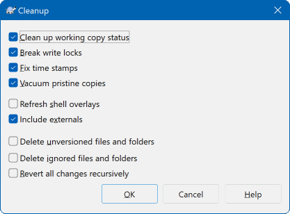

24常见问题：报错怎么处理
这一节按「症状」组织：你不用记住原因，只要在下面的表里找到
和你屏幕上看到的差不多的那一行，照着最后一栏做就行。
表格后面单独用一整块讲 Clean up——
它是这些办法里最通用、最能解决「说不清哪里坏了」的那一个。
| 症状 | 原因 | 图形界面怎么解决 |
|---|---|---|
| 右键菜单里找不到 Commit / Update 只有 Checkout 和 Settings |
这个文件夹还不是工作副本。它只是个普通文件夹， SVN 不知道它和哪个仓库有关系。 | 在它上面右键 → SVN Checkout...， 填仓库地址检出一次。检出之后菜单才完整。 |
| 文件图标上没有绿色对勾等角标 | 两种可能：① Windows 最多只显示十几个角标程序， 被网盘、云同步软件抢了名额；② 系统资源管理器需要重启。 | 先重启资源管理器（任务管理器里找到「Windows 资源管理器」重启它）。 还不行就调整图标覆盖设置里的优先级，让 SVN 排到前面（第 23 节）。 |
提交时报「工作副本已锁定」is already locked |
上一次操作（提交、清理、更新）被中途打断了—— 关了窗口、断了网、断电，SVN 留下的锁标记没来得及清掉。 | 在工作副本上右键 → TortoiseSVN → Clean up， 勾上解除锁那一项，清理一次再提交。 |
提交时报「文件已过期」out of date |
在你编辑的这段时间里，别人先提交了同一个文件。 服务器拒绝让你覆盖别人的改动。 | 先 SVN Update 把别人的改动拉下来， 有冲突就先解决冲突（第 10 节），然后再提交。 |
| 更新时出现冲突 文件角标变成黄底红叹号 |
你和同事改了同一个文件的同一处，机器没法替你决定留谁。 | 按第 10、11 节的流程处理：用合并工具逐处决定，保存后右键
Resolved，再提交。 |
| 提交时提示输入用户名密码，输了还是失败 | 本机缓存着旧的凭据，正在用旧信息请求， 所以你输入的新密码根本没被用上。 | 右键 → TortoiseSVN → Settings →
Saved Data → 在认证数据那一行点 Clear →
确定，然后再操作一次。 |
| 文件角标一直是灰色问号 | 这个文件在项目文件夹里，但还没有被登记进版本控制， 提交时会被跳过。 | 对着它右键 → Add， 角标变成蓝色加号，再提交就会带上它。记得同时提交它所在的文件夹。 |
| 手滑把文件删掉了，想找回来 | 删掉的只是本地副本，服务器上的版本一直都在。 | 对着被删文件所在的文件夹右键 → SVN Update， 它会重新被拉下来。如果连文件夹一起删了，对上一级更新。 |
| Revert 之后后悔了 本地改动没了 |
Revert 是不可逆的，
它把文件恢复成服务器上的样子，你未提交的修改就此消失。 |
没有直接的撤销按钮，两条退路： ① 从日志里找到那个文件的某个历史版本，右键另存出来； ② 如果用过编辑器，去编译器的本地历史里找。 最好还是养成「大改之前先提交一次」的习惯。 |
| 磁盘空间越来越小 | 工作副本里为每个文件留了一份原始副本用于比对， 加上历史缓存，项目一多占用就上来了。 | 右键 → Clean up 时勾上收缩原始副本那一项；
再清一清不用的工作副本；
Settings → Saved Data 里清理历史缓存。 |
| 提交时提示「路径被拒绝」/ 没有权限 | 你的账号对这条目录没有写权限， 或者权限刚被改过、你这边还缓存着旧状态。 | 先清除认证数据（同上一行），再确认账号在服务器上的权限（第 20 节）。
有时是因为你在写 tags 这类被设成只读的目录。 |
| 操作卡住不动，进度条一直转 | 服务器连不上、网络中断，或者仓库地址已经变了。 | 关掉进度窗口重试一次；还不行就用 Clean up 清一遍，
然后确认网络和地址是否有效。必要时用 Repo-browser 先试试能不能连上服务器。 |
- 提示「已锁定」「已过期」——状态问题，用
Clean up或Update能解决大部分。 - 提示「认证失败」「没有权限」——凭据或权限问题，先清认证数据再想别的。
- 菜单少了、角标没了——本机环境问题：不是工作副本，或者资源管理器需要重启。
- 提示「冲突」——这是正常业务流程，按第 10、11 节处理，不是故障。
别在没看懂提示的时候反复点重试，那只会让状态更乱。
Clean up：一个能修很多问题的万能操作
它是 TortoiseSVN 里使用价值最高的一个功能： 不改变文件内容，只把工作副本的内部状态「梳理一遍」。 遇到说不出原因的怪现象，先做一次它总是没错的。

① Clean up working copy status · 清理工作副本状态—— 最核心的一项，默认就勾着。 它把工作副本的内部记录和磁盘上的实际情况对齐： 那些「明明文件在、SVN 却说不在」的矛盾，就是靠它消除的。
② Break locks · 解除锁定—— 清掉因为操作中断而残留的锁标记。 「工作副本已锁定 / is already locked」这个报错，就是冲它来的， 遇到那个错误时确认这一项被勾上，跑一次就能继续提交。
③ Fix time stamps · 修正时间戳—— 让文件的时间戳反映的改动时间更准确， 这样「这个文件到底有没有被改过」的判断就不会出错。 它解决的是「文件明明改过、角标却一直是绿勾」这类问题。
④ Vacuum pristine copies · 收缩原始副本—— TortoiseSVN 会在工作副本里保存每个文件从服务器取下来时的原始版， 用于比对和撤销。时间长了这些副本会有一堆碎片，白占空间。 勾上它会把这块存储压紧，是「磁盘越用越小」的主要对策。
⑤ Refresh shell overlays · 刷新图标角标—— 清理完顺便通知资源管理器重新读一遍状态。 角标显示不对时很有用，勾上它省得你还得手动重启资源管理器。
顺序上没什么讲究，一次全勾上跑一遍也无妨。真要有人问「Clean up 怎么用」， 答案就是：把最常用的那几个勾上，点确定。
万能三步
① 先 Clean up。不加思考地先做一次清理，把工作副本的状态梳理回正常。这一步能解决大部分「莫名其妙」的问题，而且不会有任何副作用。
② 再 Update。对着工作副本右键 → SVN Update，把本地和服务器对齐。很多「提交失败」「文件过期」其实是本地落后于服务器。
③ 还不行就删掉重新检出。把出问题的那个文件夹整个删掉，再对着仓库地址检出一次。代码在服务器上，一个字都不会丢——这一步听起来粗暴，但它是解决顽固问题最可靠、最省时间的办法。重新检出通常几分钟，比研究半天报错快得多。
这三步的顺序是有道理的：从最轻、最安全的一步开始，一步步加大力度；不要一上来就删掉重来，也不要为了一个小锁问题折腾一小时。
第三步「删掉重新检出」有一个前提：你本地没有还没提交的重要改动。因为一删，那些改动就随之消失了——它们从没到过服务器，谁也救不回来。
所以动手之前，先做这两件事：① 看一看自己改了什么——右键 → SVN Check for modifications，确认列表里到底有哪些文件没提交；② 把这些改动存出来，最稳妥的方式是用补丁——在改动所在的文件夹上右键 → TortoiseSVN → Create patch...，把它保存成一个 .patch 文件放到工作副本外面（比如桌面）。做完这一步，你的心血就有了一个独立的载体，删文件夹、重新检出都不再有任何风险。
把顺序记牢：先看改动 → 先做补丁 → 再删 → 再检出。补丁怎么用、怎么在重新检出之后应用回来，第 22 节有完整流程。
TortoiseSVN 的报错窗口通常分两截：上面一行是人话的概述，下面一大段是详细内容。很多人被下面那段吓到，其实你要看的正是它。
① 粗读第一行就能对上本节表格里的一行——「已锁定」「已过期」「认证失败」这些关键词就在那里。
② 看看有没有具体的文件路径。往往是某一个特定文件出了问题，而不是整个项目。找到那个文件单独处理，比对着整个项目折腾快得多。
③ 看不懂就把整段复制下来，连同「我正在做什么操作」一起发给同事或搜索。在群里只说「提交失败」，别人没法帮你；贴上原文，十有八九一眼就有人认出来。
出错先用万能三步：Clean up → Update → 重新检出。认证怪问题先清数据：Settings → Saved Data → 清除认证数据。
重来之前先留补丁：没提交的改动，只有补丁能替你保住。看不懂就贴原文：报错的文字比你的描述精确一百倍。
把这一节当成工具书：出问题时不用从头读，直接找和屏幕上一模一样的那一行。